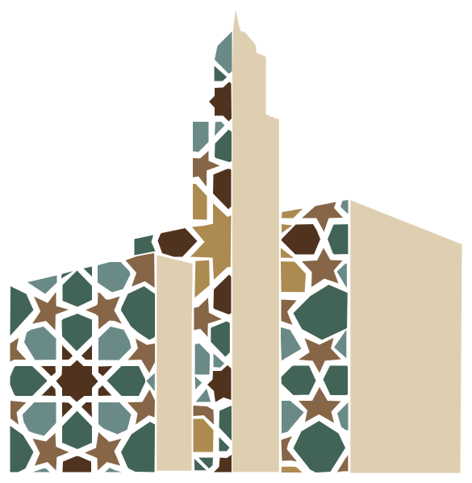
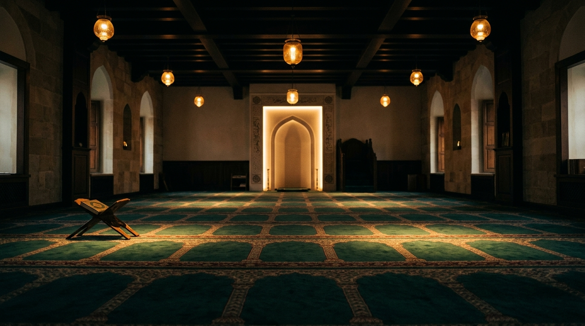
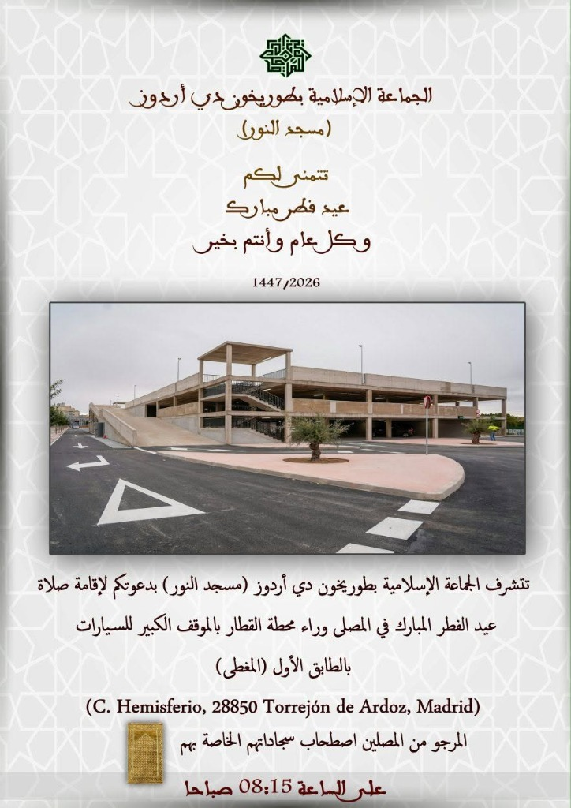

Tabla oficial de horarios de oración para el mes de Octubre
Calendario completo día a día de Fajr, Shuruq, Dhuhr, Asr, Maghrib e Isha'a en Torrejón de Ardoz, con el cambio de hora de invierno (25 oct).
Ver en grande

Comunidad Islámica de Torrejón de Ardoz
بِسْمِ ٱللَّٰهِ ٱلرَّحْمَٰنِ ٱلرَّحِيمِ
Comunidad Islámica de Torrejón de Ardoz
--
Te damos la bienvenida
Tanto si vienes a orar, a aprender en la madrasa, a apoyar los proyectos comunitarios o simplemente a conocernos, aquí siempre encontrarás un espacio cercano y en paz.
Actualidad comunitaria
يَا أَيُّهَا النَّاسُ إِنَّا خَلَقْنَاكُم مِّن ذَكَرٍ وَأُنثَىٰ وَجَعَلْنَاكُمْ شُعُوبًا وَقَبَائِلَ لِتَعَارَفُوا
«¡Oh, humanos! Os hemos creado de un varón y una hembra y os hemos hecho pueblos y tribus para que os conozcáis unos a otros».
Sura Al-Hujurat · 49:13
¿Tienes dudas sobre los horarios, quieres inscribirte en las clases o simplemente visitar la mezquita? Escríbenos.
Nuestra sede actual
مسجد النور
La Mezquita Annur es hoy el corazón de la Comunidad Islámica de Torrejón de Ardoz: nuestra mezquita activa y sede, donde rezamos, aprendemos y nos encontramos cada día mientras construimos la futura Mezquita Arriduan.
Las cinco oraciones diarias en congregación y la oración del viernes con su jutba. .
Acompañamiento y consejo para personas y familias, y encuentros periódicos de la comunidad.
La mezquita abre cada día para las oraciones. Visitas guiadas se organizan con cita previa.
Nuestros pilares
Las cinco oraciones en congregación y la jutba semanal.
Madrasat Iqraa: clases para niños y adultos de árabe y Corán.
Mentoría y programas deportivos para fortalecer lazos.
Orientación familiar y reparto de alimentos vecinal.
El gran proyecto estratégico de la Comunidad Islámica de Torrejón de Ardoz. Las obras siguen avanzando, pero tu aportación en esta fase es esencial.
«Recordamos con profunda gratitud y respeto a nuestro querido Sihmed (que Allah le tenga en Su misericordia). Su esfuerzo y entrega sincera fueron uno de los impulsos iniciales de este sueño que hoy seguimos construyendo entre todos. Os invitamos a ver el primer vídeo de la construcción de la mezquita.»


مَنْ بَنَى مَسْجِدًا لِلَّهِ بَنَى اللَّهُ لَهُ بَيْتًا فِي الْجَنَّةِ
«Quien construya una mezquita para Alá, Alá le construirá una casa en el Paraíso».
Sahih al-Bujari y Muslim
Colaboración Directa
Cada aportación es una sadaqa yariya que impulsa directamente las obras de la Mezquita Arriduan. Puedes colaborar de forma inmediata mediante cualquiera de nuestras vías oficiales:
Donación directa desde tu app bancaria
Transferencia bancaria directa
Concepto recomendado: «Construcción Arriduan» o tu nombre.
Aportación segura con saldo o tarjeta
Envía tu colaboración a través de la web o app de PayPal indicando este número de referencia.
Mezquita Annur · Torrejón de Ardoz
Puedes entregar tu donativo en mano o en las huchas oficiales habilitadas en la Mezquita Annur tras cualquiera de las 5 oraciones diarias.
Abierto todos los díasSi necesitas ayuda o prefieres consultar cualquier detalle, escríbenos directamente por WhatsApp.
Educación y Cultura
مدرسة اقرأ
Una escuela para todas las edades y una comunidad viva donde compartimos, aprendemos y servimos juntos a lo largo de todo el año.
Lectoescritura y comunicación en árabe, desde el alfabeto hasta fluidez.
Fundamentos de fe, práctica religiosa y moral (ajlaq) del día a día.
Círculos de memorización y recitación con las reglas del tayuid.
Talleres, deporte y espacios de debate para jóvenes.
Iftares en Ramadán, celebraciones de Eid y reuniones familiares.
Jornadas de puertas abiertas y visitas escolares.
Recogida de alimentos y un equipo de voluntarios vecinal.
¿Quieres inscribirte en clases o sumarte a nuestro equipo de voluntarios? Escríbenos.
El té siempre corre de nuestra cuenta. Pásate, sin cita previa.
Conoce el islam
No hay preguntas obvias ni expectativas: solo puertas abiertas, conversaciones sinceras y un espacio donde sentirte en paz. Ven tal como eres, a tu propio ritmo.
Ser musulmán significa vivir reconociendo a un solo Dios y buscando la paz interior siguiendo el ejemplo del Profeta Muhammad ﷺ.
La entrada al Islam no requiere ceremonias complicadas: nace de un testimonio de fe sincero y voluntario (la Shahada), el reconocimiento de que no hay más divinidad que Dios y que Muhammad es su mensajero.
El Corán es la palabra revelada de Dios: una guía viva de luz, consuelo y sabiduría que habla directamente al corazón humano, invitándonos a reflexionar, a hacer el bien y a encontrar sosiego en cualquier momento de la vida.
El Islam es un modo de vida, no solo una lista aislada de reglas o prohibiciones. Acompaña cada día de manera natural: en el amor hacia la familia, el respeto con los vecinos, el trabajo honesto y la serenidad interior.
A partir de ahí, la práctica se apoya en los cinco pilares:
«El islam es un camino gradual. Nadie nace sabiéndolo todo; lo valioso es el anhelo del corazón por hacer el bien y vivir en armonía».
Visitas tranquilas para conocer cómo rezamos y contemplar la serenidad del espacio.
Una charla tranquila con un miembro del equipo, con un té caliente y sin ningún compromiso.
¿Prefieres leer con calma desde casa? Si quieres resolver dudas a tu propio ritmo antes de visitarnos, te dejamos esta sencilla guía en español sobre la fe, los pilares y el Corán.
En absoluto. Todo el mundo es bienvenido con los brazos abiertos. Muchos de nuestros visitantes son vecinas y vecinos curiosos que quieren conocer la mezquita de su ciudad.
Simplemente ropa cómoda y discreta. Al entrar nos descalzamos para mantener limpia la alfombra donde rezamos, y las mujeres pueden ponerse un pañuelo si así lo desean (no es obligatorio traerlo, tenemos en la entrada si necesitas).
Sí, por supuesto. Puedes venir a contemplar una oración en silencio, sentir la acústica y el ambiente de recogimiento, sin tener que participar en los movimientos si no quieres.
Si quieres aprender a tu propio ritmo desde el móvil, escuchar reflexiones sinceras o profundizar en el día a día, te recomendamos seguir estas cuentas en español:
Divulgadora y profesora coránica. Fundadora de la escuela Academia Khayrukum, dedicada a la enseñanza del Corán, Tajwid y formación en español.
Estudios islámicos, reflexiones, podcast y análisis cercano del Corán y la Sunna para jóvenes y familias.
Proyecto divulgativo de referencia en español: Corán, podcasts, divulgación y comunidad.
Psicología, bienestar emocional, salud mental y espiritualidad unidas desde la perspectiva islámica.
Conferencias, clases de iniciación y profundización, jutbahs y conocimiento islámico claro en español.
Comunicadora y creadora de contenido. Historias del Corán, reflexiones sobre la fe, vivencia cotidiana y valores del islam en español.
Actualidad y vida comunitaria
Toda la actualidad oficial y comunicados de la Comunidad Islámica de Torrejón de Ardoz: anuncios escolares de Madrasat Iqraa, asambleas comunitarias, oraciones extraordinarias y horarios de rezo.
Calendario completo día a día de Fajr, Shuruq, Dhuhr, Asr, Maghrib e Isha'a en Torrejón de Ardoz, con el cambio de hora de invierno (25 oct).
Inscripciones y adquisición de libros en el Centro Cultural Las Fronteras. Plazas limitadas. Inicio de clases el 3 de octubre. Tel: 624 477 660.
Invitación a todos los miembros de la comunidad en el Centro Islámico de Torrejón de Ardoz, fijada entre las oraciones de Maghrib e Isha'a.

Eid al-FitrLa Mezquita Annur convoca la oración comunitaria en el aparcamiento de la estación (C. Hemisferio) a las 08:15 h. Acudir con alfombra propia.
Únete para recibir al instante los horarios de rezos, cambios en festividades y avisos urgentes de la comunidad.
Contacto
¿Tienes preguntas sobre oraciones, clases o el proyecto de construcción? Escríbenos.